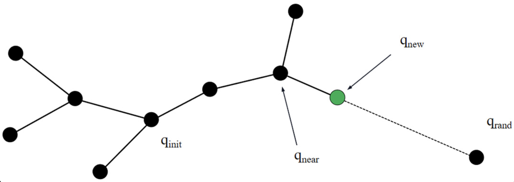
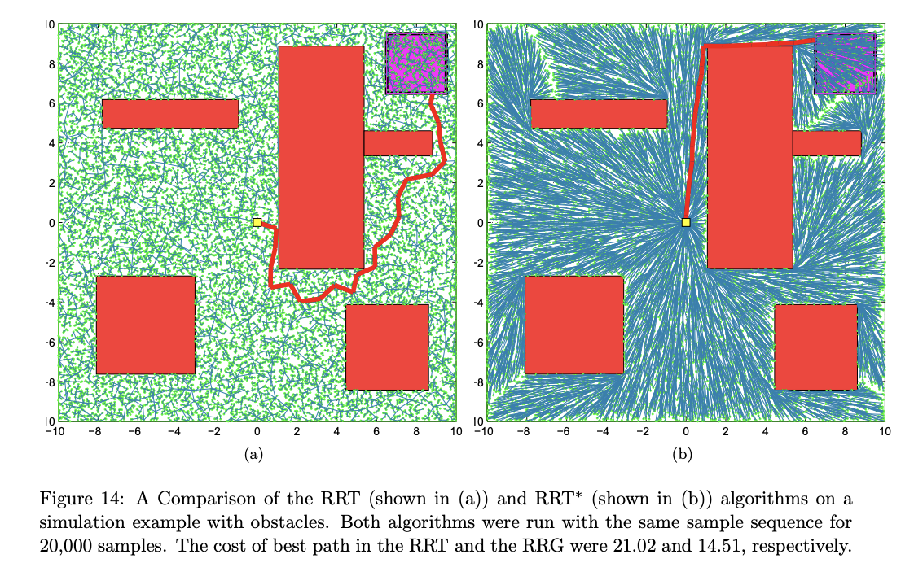

We looked into Rice University's presentation. Then we read the fundamental paper on RRT*. Then we looked into other Path planning Algorithms(such as PRM) along with their paper/implications.
TL:DR
Rice Universtiy Video
What we learned from the video:
- Sequential Approach The sequential approach essentailly randomly choose a point and advance towards that point for a fixed step size. When we say advance we mean the tree takes the closest node to that point and grow a new node. The randomness lies within the angle where we advance.
- Their Parallel Approach Instead of growing one node at one time, they grow three nodes parallely and communicate the tree. So the growing is done parallelly using OpenMP library in C++ to create multiple threads.
- Their testing The algorithm was tested on both simulated and real-world robots. The testing specifics are as follows.
- Our Critique Overall the presentation gives the naive approach to parallel RRT. To our thinking, the speedup is not so promissing between two threads and three. Moreover because this is a general introduction, it didn't touch any of the details we'd like to see -- Race conditions handling, load imbalance issues, communication overhead. There's no discussion nor data on it. Admittedly it's because of the limited thread number, but that also incentiviced us to think if we can introduce more nodes in each step. Then it became the question of am I spending too much time on the near boundary per distance advanced -- because each time we are doing n times more nodes added. So to make it more efficient we should consider having the randomly generated nodes to not be in the fixed step size. We will go into deeper discussion on this next meeting and think of the setbaqcks.


Their identification of bottleneck is edge creation and collision checking. So they divoded that work among parallel threads.
RRT*
- PRM
- When adding a node, usual RRT checks for the closest neighbor, this time we also check for the neighbor that result the shortest path to the origin node. We pick the shortest routing distance one.
- When adding a node, we check everyone in its neighboring distance to see if we can reroute others.
- Thinking about paralleling this makes me headach.
- Some Complexity
- RRT,RRT* COMP
So it also did a little introduction of RRT* -- basically the modification is that
Oh there's also RRT March which is essentially the same idea as randomizing the step size. This would create efficiency.

What does all of these tell us:
We want RRT*! And Multi core Multi Agent RRT*.